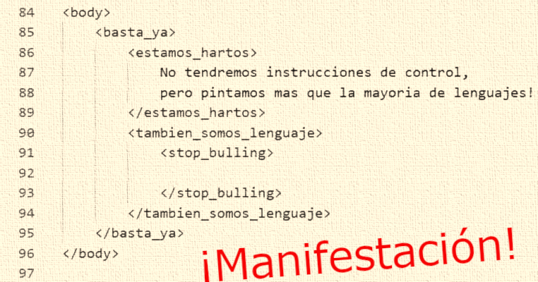

Alummno estalla
¡Explosión cerebral en pleno examen! En una escena digna de una
película de comedia, un estudiante se encontraba tan abrumado por
las preguntas del examen que su cabeza literalmente hizo "¡Boom!".
Testigos afirman que los fragmentos de conocimiento salieron
disparados por toda la sala. Afortunadamente, nadie resultó herido,
pero se recomienda a los estudiantes no tomar los exámenes tan
literalmente. ¡Parece que el conocimiento puede ser una bomba de
tiempo!
Manifestación

¡Revolución estudiantil en el campus! Estudiantes protestan
enérgicamente contra examen de CSS y HTML. Con pancartas que rezan
"¡No más códigos, queremos paz!" y "¡Abajo el terror del CSS!", los
jóvenes exigen un cambio en el sistema educativo. Algunos incluso
han adoptado disfraces de "nativos digitales en huelga". Los
profesores están desconcertados pero impresionados por la
creatividad de las manifestaciones. ¿Será este el comienzo de una
era de protestas estudiantiles tecnológicas?